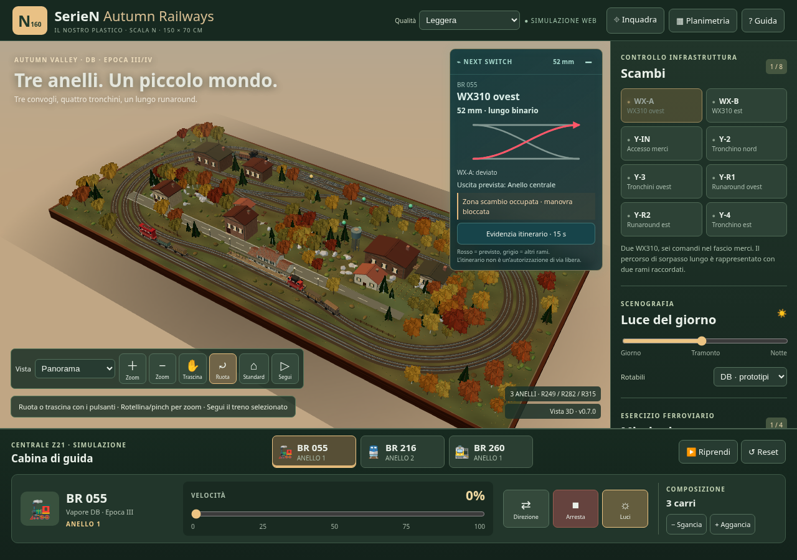
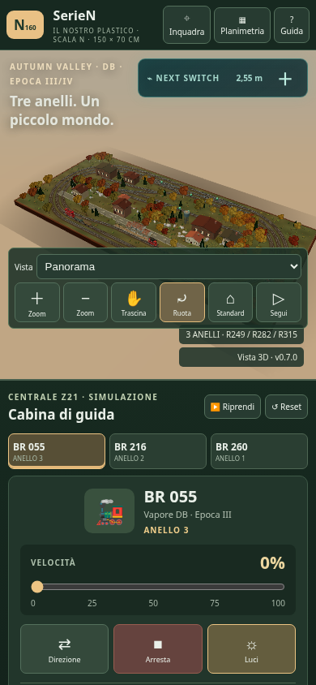

Archivio di audit precedente alla migrazione. Stato attuale · Planimetria canonica corrente
Apri il simulatore · Mappa della fase 0 · Risultati del collaudo
Prossimo scambio, distanza lungo il percorso ferroviario, connessioni reali e uscita prevista. Rosso = itinerario previsto; la disponibilità del percorso non è certificata. Gli scambi occupati o in avvicinamento sono protetti dagli stessi controlli usati dall'HUD.
Il pannello è informativo e minimizzabile. L'evidenziazione 3D si può disattivare e termina dopo15secondi. Sul telefono il pannello parte minimizzato. Nel modello attuale due coppie di comandi dello scalo condividono un nodo: vengono mostrate come gruppi senza inventare deviatoi in sequenza.


Immagini del collaudo con renderer software: i valori FPS visibili non sono un benchmark di una GPU desktop o di un iPad.